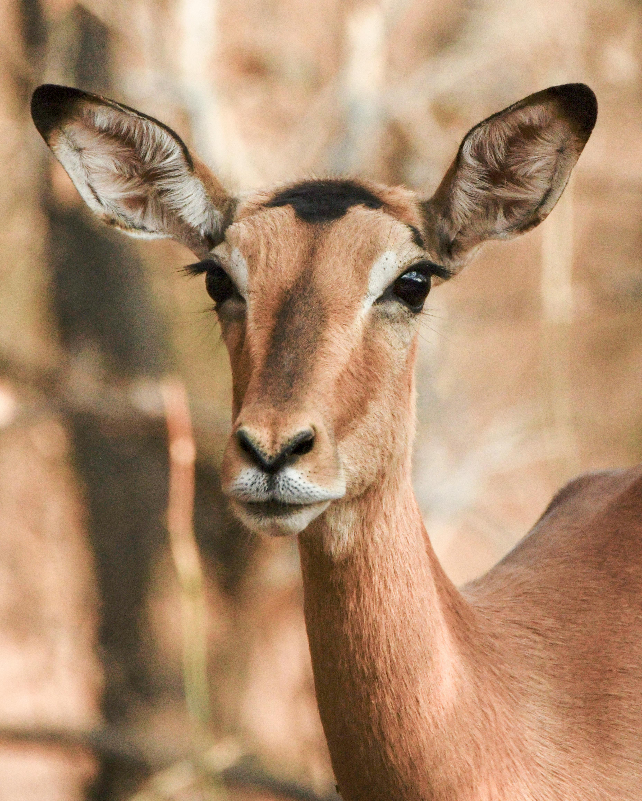

Parrot Yellow Macaw

Macaws usually live in pairs, and after the nesting season, in family groups. When adult macaws choose mates, they usually stay together until one of them dies.
- Binomial name: Ara ararauna
- Length: Up to 76–86 cm (30–34 in)
- Weight: Up to 0.9–1.5 kg (2–3 lb)
- Lifespan: Between 30 to 35 years
The blue-and-yellow macaw is one of the largest parrots in the world, with an average length of around 85cm and a wingspan of up to 100cm. The bright blue feathers on the wings and tail contrast strikingly with the yellow feathers on the head, chest, and belly.
Gazelle
My name Miral actually means baby deer or gazelle in turkish.
- Type species: Capra dorcas
- Length: standing 60–110 cm (2–3.5 ft)
- Weight: between 16kg to 40kg
- many species: they're not deers, yet very interesting group of their own.
In the arabic culture, and its old poems, the eyes of the "Mahha" the arabic name for gazelles that live in the desert, are regarded as unparalleled in beauty, due to their big and unique shape.